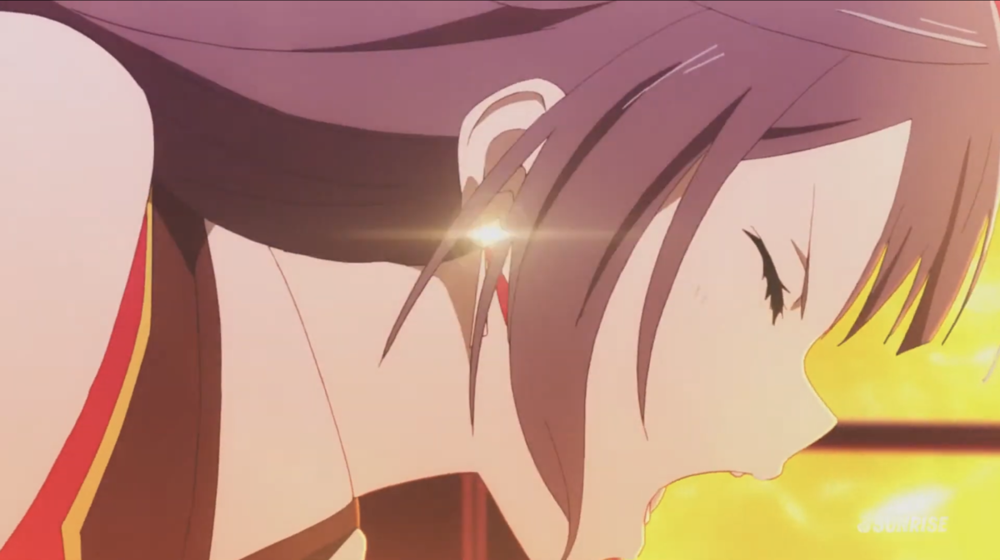
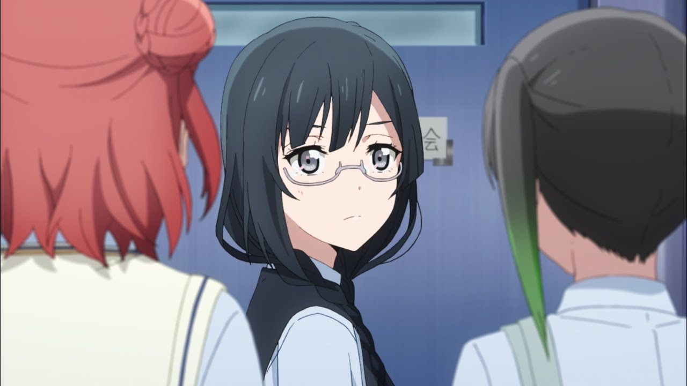

ニジガクのストーリーは主人公の高咲侑と幼馴染の上原歩夢が学校の部や同好会でアイドル活動 を行うアイドル、スクールアイドルに出会うところから始まります。
燃え上がるようなパフォーマンスを魅せた優木せつ菜を見て、侑はときめいてしまいます。
スクールアイドルに興味を持った侑たちは在学中の高校、虹ヶ咲学園のスクールアイドル同好会 部室に訪れるのですが…
ニジガクの魅力の一つ目は、「大好き」を貫く前向きなストーリーです、
アニメやアイドルに関わらず趣味や好きなものがある人はぜひ一度ご覧ください。
また この作品、なんとラブライブシリーズでありながら「ラブライブ」という大会に出場しないという
従来のシリーズとは違った物語が展開されます。
ちなみに、他のラブライブ作品とのつながりはあまりないのでニジガクから見ても全然OKです。
ニジガクの魅力の二つ目は、個性豊かな同好会メンバーです、みんな魅力的でつい応援したくなってしまいます。
そんな彼女たちの魅力はこのページだけじゃ紹介しきれないので別ページにて詳しく解説しています。
ニジガクの魅力の三つ目は、名曲揃いの楽曲です、盛り上がる曲や泣ける曲、
メンバーごとのソロ曲やメンバー2～4人組で歌うユニット曲、同好会メンバー全員で歌う曲など多種多様です、
これもまたこのページだけでは書ききれないので別ページを用意しております。
ニジガクの魅力の四つ目は、現実で行われる声優さんたちによるライブです、
まるでアニメの世界に引き込まれたかのような空間はまさにときめき！
周りのオタクたちの熱気も相まってどんな人でも一瞬でアツくなり、終わるときには自然と涙がこぼれます。